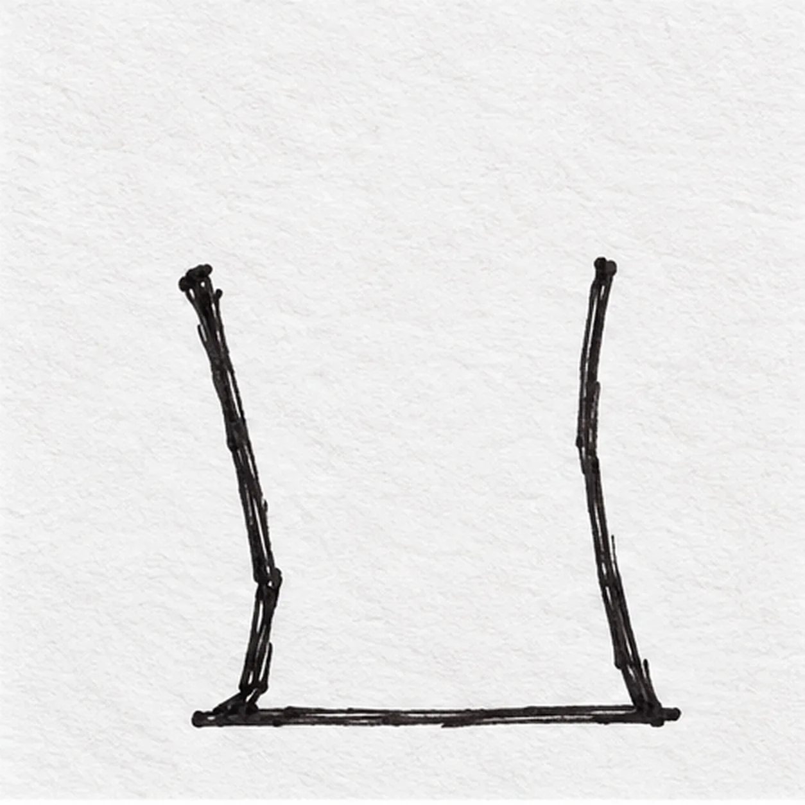
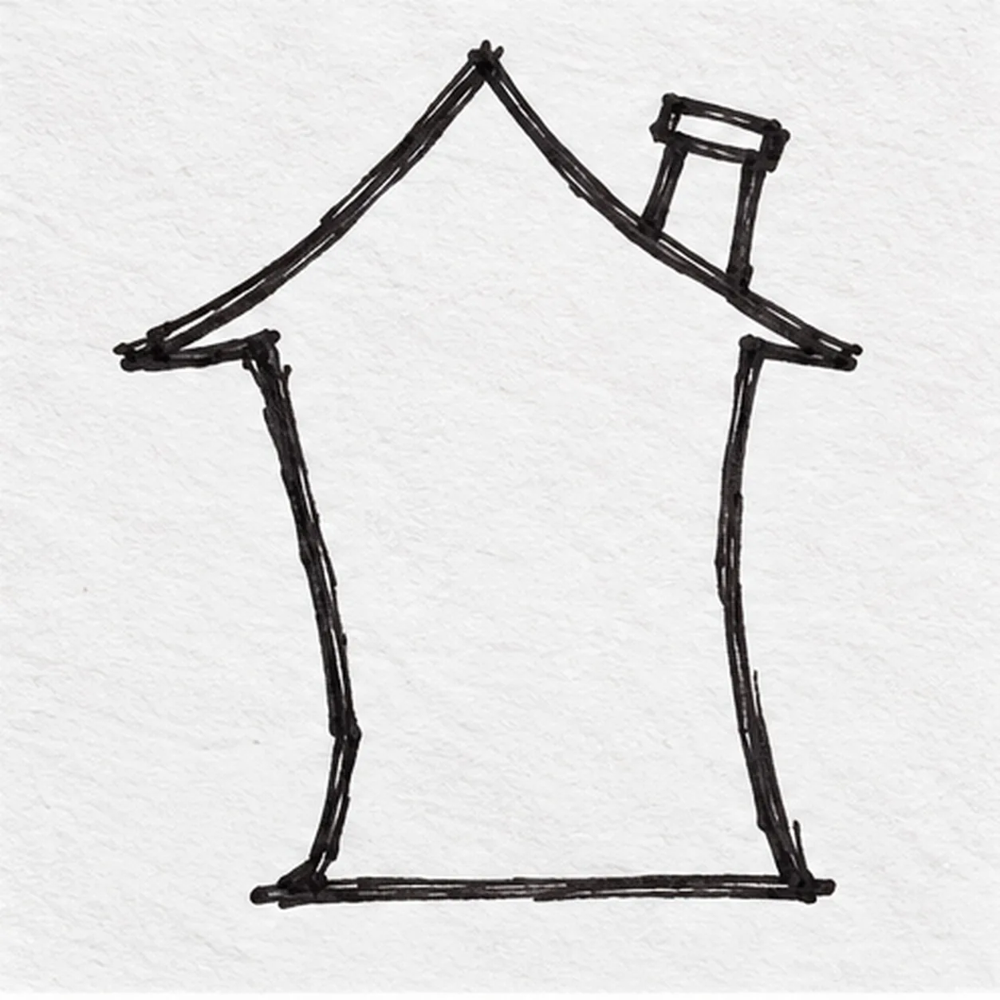
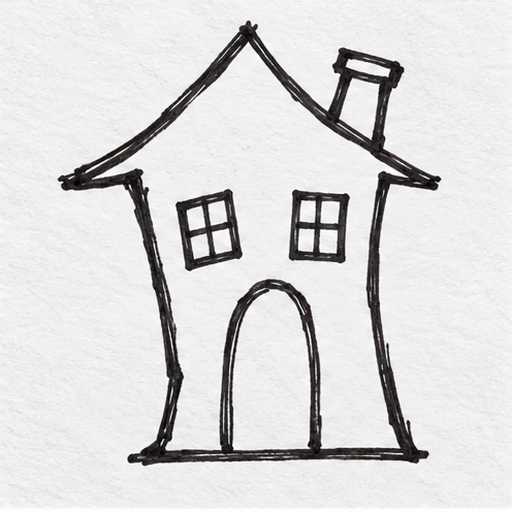
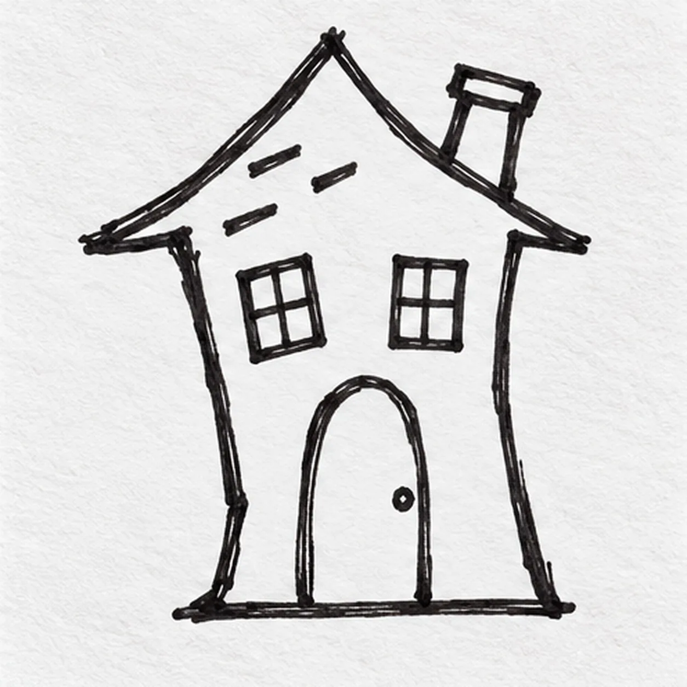
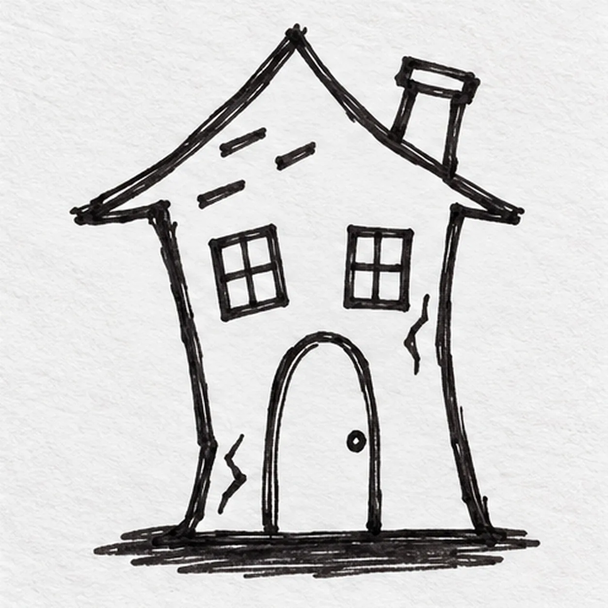

Marker ready?
Let's draw a cartoon haunted house
Treat this as one playful practice round: sketch the idea loosely, simplify the shapes, then commit with confident marker outlines and bright fills.
-
01

Shape the crooked walls
With black felt tip, draw two tall, slightly leaning wall lines and join their bottoms with one flat base. Leave their top ends open so the roof can attach there next.
Marker tip: Ghost the two tall routes in the air before using the marker; their small bends make the house feel crooked.
-
02

Raise the roof and chimney
From the two upper wall corners, sweep up to a steep off-center roof peak and back down, leaving an eave on each side. Tuck one short leaning chimney behind the right roof slope.
Marker tip: Turn the paper as you pull each roof slope so the eaves meet the fixed wall tops cleanly.
-
03

Place windows and door
Place one square window high on each wall side and cross each with one vertical and one horizontal bar. Below their gap, draw a tall arched door that meets the base.
Marker tip: Compare the empty gap between windows before drawing the centered arched door.
-
04

Give the roof its quirks
Dot one small knob on the door's right side. Across the roof, place exactly three short broken shingle strokes, leaving the chimney and both windows clear.
Marker tip: Keep exactly three roof strokes, spaced apart rather than making a dense pattern.
-
05

Crack and ground the walls
Place one short crooked crack beside the door's lower left and another beside the right window. Under the existing base, drag a broken oval shadow with the side of the black marker.
Marker tip: Let the two cracks stay separate from the door and window edges; break the shadow instead of filling a solid oval.
-
06
Light the spooky house
Fill the existing walls violet, roof and chimney deep teal, door coral, and all four panes in each of the two windows warm yellow. Let each felt-tip area dry before retracing its established black edge; leave little white paper streaks.
Marker tip: Pull each color from the black edge inward, leaving a few thin paper gaps for felt-tip texture.